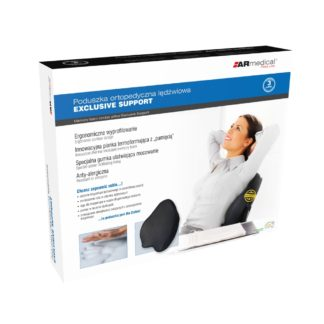

Patarimas 1: Ortopedinės pagalvės pasirinkimas - Kita - 2020
 Dietos Gyvenimas Žaisti Farmacija Grožis Žaisti Grožis Atsipalaiduoti Medicinos rūšys Darbas Grožis Fitnes Atsipalaiduoti Kelionė Darbas Pagrindinis Kita Patarimas 1: Ortopedinės pagalvės pasirinkimas - Kita - 2020 KitaPatarimas 1: Ortopedinės pagalvės pasirinkimas - Kita - 2020
Calling All Cars: Alibi / Broken Xylophone / Manila Envelopes (Spalio Mėn 2020).
Svajonėje žmogus praleidžia beveik 1/3 savo gyvenimo. Štai kodėl jums reikia atkreipti dėmesį į tai, kad miego metu jis jaučiasi patogiai. Tai gana sunku pasirinkti paprastą pagalvę sau, todėl siūlau jums likti ant ortopedijos. Pakalbėkime apie tai, kaip jį pasirinkti.
Instrukcija
1
Pirmiausia turėtumėte nuspręsti, kokią medžiagą norite nusipirkti ortopedinės pagalvės. Jis gaminamas ne tik iš natūralaus latekso ir polistireno, bet ir iš poliuretano putų ir grikių lukštų. Ypatingas dėmesys skiriamas pagalvę, turinčią atminties efektą. Jis gali greitai įgyti norimą galvos formą, kuri jums tinka, ir visi, nes ji reaguoja į šilumą ir slėgį. Kitaip tariant, šiuo atžvilgiu gamintojai gana gerai pavyko.
2
Be to, šio produkto pasirinkimas priklauso nuo kūno, kuriame miegate, padėtis. Jei didžiąją dalį miego praleidžiate ant nugaros, pasirinkite standžią pagalvę. Pagalvė su vidutiniu standumu geriausiai tinka kačių vyrams, o minkštiausias rekomenduojama tiems, kurie mėgsta miegoti ant skrandžio. Beje, yra net ir ortopedinės pagalvės versija, kuri tinka žmonėms, kurie mesti ir verčia miegoti. Ji užima bet kokią poziciją ir poziciją.
3
Renkantis ortopedinę pagalvę atkreipkite dėmesį į jo plotį ir aukštį. Pirmasis parametras turi atitikti jūsų pečių plotį. Antrasis parametras taip pat priklauso nuo pečių dydžio, t. Y. Kuo platesnės jos yra, tuo didesnė pagalvė.
4
Keista, bet renkantis ortopedinę pagalvę, turėtumėte atkreipti dėmesį į čiužinį, ant kurio miegate. Produkto aukštis priklauso nuo jo standumo.
5
Rolė, esanti ant ortopedinės pagalvės, taip pat pasirenka sau. Jo optimaliausias aukštis žmonėms, miegantiems ant nugaros, yra 8-11 centimetrų. Tie, kurių aukštis yra mažesnis nei 165 cm ir mėgsta miegoti savo pusėje, rekomenduojama pasirinkti pagalvę, kurios aukštis yra 11-12 centimetrų. Aukštas žmogus rekomenduojamas voleliu, kurio aukštis yra 13-14 centimetrų. Vadovaudamiesi šiomis rekomendacijomis galėsite pasirinkti jums tinkančią ortopedinę pagalvę.
Patarimas 2: Ortopedinė pagalvė: kaip pasirinkti
Norėdami pasirinkti patogią ortopedinę pagalvę, turite žinoti, kokie parametrai jums turėtų skirti ypatingą dėmesį. Kad miegas būtų kuo patogesnis, ritinio aukštis pasirenkamas priklausomai nuo pasiekiamumo dydžio.
Šiuolaikinė ortopedinė pagalvė turi gerai žinomą stačiakampę formą ir vienoje pusėje yra sutankintas volas, kurio storis parenkamas pagal peties dydį. Priešingai populiariems įsitikinimams, nė vienas iš šių produktų neišgydo osteochondrochų, bet veiksmingai užkirsti kelią jo paūmėjimui ir pagerins bendrą fizinę būklę.
Kas yra ypatinga dėl ortopedinės pagalvės?
Miego metu ji palaiko galvą tokioje padėtyje, kuri skatina normalų kraujo tekėjimą. Gimdos kaklelio stuburas yra patogiausia, todėl galite atsipalaiduoti viršutinę kūno dalį. Pagalvės minkštumas ir medžiaga, iš kurios ji pagaminta, yra parinktos taip, kad miegas būtų kuo patogesnis.
Ortopedinių produktų atrankos kriterijai
1. Jei asmuo yra įpratęs miegoti ant nugaros, turėtumėte nusipirkti pagalvę, kuri suteiks žemesnę galvos padėtį.
2. Jei yra minkštas čiužinys, rekomenduojama įsigyti mažesnį produktą.
3. Jei miego metu yra įpročio, padėkite ranką po galvą, ir šiuo atveju jums reikia pasirinkti žemą pagalvę.
4. Kruopščiai ryte ryškus kaklas, kad pasirinktas produktas neatitinka peties aukščio.
Ką ieškoti renkantis ortopedinę pagalvę?
1. Produkto forma.
2. Jo matmenys.
3. Aukštis.
4. Medžiaga, iš kurios ji pagaminta.
Kalbant apie pirmąjį parametrą, gydytojų rekomendacijos yra tokios: produkto plotis neturi viršyti čiužinio pločio. Standartinis ortopedinės pagalvės ilgis yra 40-80 cm, plotis - 30-50 cm. Kiekvienam iš jų pagaminti tinkamo dydžio pagalvės.
Ritinio aukštis yra pats sunkiausias pasirinkimo parametras. Pagalvotos pagalvės dalies matmenys svyruoja nuo 6 iki 16 cm, daugumai žmonių geriausias pasirinkimas yra 10-14 cm aukščio gaminiai, o plačių pečių atveju pageidautina turėti kietą čiužinį. Ortopedinės pagalvės apskritai turi pakankamai minkštumo, todėl 1-2 cm aukščio skirtumas neturės reikšmingo vaidmens patogiam miegui.
Formaliai šie produktai yra klasikiniai ir ortopediniai. Pirmieji yra labiausiai tinka žmonėms, kuriems nėra osteochondrozės, nes jiems nereikia priprasti prie jų. Ortopedinė forma pasižymi vienu ar dviem ritinėliais. Jie, savo ruožtu, turi skirtingus žingsnius po galva, tačiau atlieka vieną vaidmenį: jie suteikia patogiausią paramą.
Ypatingas dėmesys turėtų būti skiriamas medžiagai, iš kurios pagaminta pagalvė. Kai kurie iš jų turi „atminties efektą“, tai yra, jie sugeba reaguoti į šilumą ir slėgį. Jų įtakoje produktas pasižymi tam tikra forma ir gali lėtai prisitaikyti prie kūno kontūrų. Tokio poveikio etaloninė medžiaga yra Tempur. Jis turi pakankamą standumą ir didžiausią komfortą, kad būtų galima atsukti. Atsižvelgiant į visas pasirinkimo galimybes, galite įsigyti patogią ir tvirtą ortopedinę pagalvę.
Patarimas 3: Kaip pasirinkti tinkamą ortopedinę pagalvę
Ortopedinės pagalvės pagamintos iš šiuolaikinių medžiagų: putų latekso, poliuretano putų, technologinių užpildų, poliesterio. Naudojant ortopedinę pagalvę, žmogaus galva miego metu priima tinkamą padėtį, gerindamas jo kokybę.
Įsigiję ortopedinę pagalvę, galite būti tikri, kad miego metu kvėpavimas bus laisvas, kraujo tiekimas į smegenis bus normalus. Be to, ortopedinės pagalvės naudojimas gali veiksmingai užkirsti kelią gimdos kaklelio stuburo ligų vystymuisi.
Ortopedinės pagalvės skiriasi užpildų tipu, dydžiu ir forma, taip pat kainuoja. Pagalvės turi mažiausią kainą, kurios medžiaga yra poliesteris, suvyniotas į mažus kamuoliukus, apdorotus silikonu. Nusileidę ant tokios pagalvės, tai rutuliai, kurie palaiko galvą ir kaklą teisinga padėtimi.
Šios pagalvės plaunamos įprastoje rašomoje mašinoje. Džiovinimui nereikia daug laiko, nes pagalvėlės yra beveik visiškai sausos. Produktai yra pakankamai patvarūs, vidutiniškai jie tarnauja aštuonerius metus. Pasirinkę pagalvę parduotuvėje, atkreipkite dėmesį į tai, kaip siūlės siūlės yra susiuvusios. Geriausios kokybės siūlės turi trumpas siūles.
Galite pasirinkti ortopedinę putų latekso pagalvę. Ši natūrali medžiaga gaunama iš gumos augalų sulčių.
Ši pagalvė yra brangesnė, nes ji turi ypatingą anatominę formą su ritinėliais kaklo atramai. Šis produktas gali būti labai ilgas. Ortopedinės latekso pagalvėlės skiriasi nuo aukščio ir standumo. Jie puikiai tinka suaugusiems ir vaikams.
Kitas variantas - pagalvės iš technologinių užpildų Memory Foam . Šie produktai gali „įsiminti“ asmens galvos padėtį poilsio metu. Pagalvė nedaro spaudimo, švelniai palaiko kaklą ir galvą. Slėgio trūkumas pagerina kraujotaką, miegas tampa gilesnis, mažėja svajonių skaičius.
Labai aukštos kokybės pagalvės yra pagamintos iš poliuretano putų. Jie ramiai palaikys kaklą ir galvą miego metu. Produktai jums tarnaus labai ilgai. Poliuretano putų ir latekso pagalvės turi parinkti alergiškiems žmonėms. Tokiuose produktuose nesikaupia dulkių, nepradėkite erkių. Jūs neturėsite kontakto su alergenais.
Poliuretano putos gali būti skirtingo elastingumo laipsnio, viskas priklauso nuo pagalvės tipo. Jūs galite lengvai pasirinkti tinkamiausią variantą. Pirkite ortopedines pagalveles specializuotose parduotuvėse. Pasirinkdami atidžiai perskaitykite specifikacijas.
Pagalvės aukštis ir standumo laipsnis visada nurodomi atskirai. Pasirinkimas taip pat priklauso nuo to, kaip norite miegoti. Jei norite miegoti ant nugaros, pasirinkite mažesnę ir sunkesnę ortopedinę pagalvę. Šiuo metu jūs miegosite patogiau. Tie, kurie mėgsta miegoti savo pusėje, turėtų labiau minkštesnę ir aukštesnę pagalvę.
Atsargiai pasirinkite pagalvės dydį. Norėdami tai padaryti, išmatuokite peties juostos ilgį - atstumą nuo rankos su peties iki kaklo pagrindo. Suaugusiems, pagalvės yra dviejų dydžių, skiriasi nuo volo aukščio - 10 ir 14 cm Pacientai, kurių pečių ilgis yra 14 cm, turėtų pasirinkti 14 cm aukščio ritinėlį, jei peties ilgis yra 10-14 cm.
Pirmosiomis dienomis užmigti yra lengva diskomfortas, bet vėliau įprasite ir pajusite, kiek geriau miegoti ant ortopedinės pagalvės.
4 patarimas: Kokios pagalvės yra tinkamos miegoti
Pagalvė nėra reguliarus audinio stačiakampis, užpildytas minkšta medžiaga, bet ištikimas kompanionas, palaikantis mūsų galvą teisingoje padėtyje daugiau nei trečdaliui gyvenimo. Tik nedaugelis žmonių atkreipia dėmesį į patalynės pasirinkimą, nuo kurio tiesiogiai priklauso nakties miego kokybė.
Instrukcija
1
Renkantis pagalvę daugiausia reikia atkreipti dėmesį į jo aukštį ir standumą. Taip pat atsižvelgite į savo mėgstamą miego ir anatominių savybių padėtį. Bet kokiu atveju, galite būti tikri, kad, jei miegosite ant nepatogios pagalvės, kyla rimtų problemų dėl kaklo ir nugaros, o po to, kai atsibunda, atsiranda nepageidaujamo jausmo. Miego metu stuburas turi būti laisvas ir atsipalaidavęs, pradedant nuo gimdos kaklelio.
2
Renkantis pagalvę, reikia atkreipti dėmesį į jo dydį, jis turėtų būti apie 22x17, t. Y. Atitiko pečių plotį, o svarbiausia - neturėtumėte leisti galvai slysti visą miego laiką.
3
Pagalvės aukštis yra labai svarbus. Kadangi didelė pagalvė arba per maža gali sukelti kaklo (gimdos kaklelio) ir atgal (kyphosis) kreivumą. Jei nuleisite galvą atgal iš sėdimos padėties, kūnas neabejotinai užims netinkamą padėtį. Ir dėl to, kad miegojote tokioje padėtyje, susidaro neteisinga laikysena, stiprėja galvą palaikantys raumenys, dėl to atsiranda stiprus kaklo ir nugaros skausmas. Didelė pagalvėlė taip pat sukelia stuburo prastą padėtį miego metu, o po to pabudęs sukelia daug nemalonių simptomų.
4
Pagalvės aukštis yra tiesiogiai susijęs su standumu. Jei pagalvė yra labai minkšta, tada kaklas tiesiog bus palaidotas jame, ir jei jis yra labai sunkus, tada kaklo raumenys išsiplės. Abiem atvejais slanksteliai yra neteisingoje padėtyje. Iš to mes galime daryti išvadą, kad jei norite miegoti ant nugaros, turėtumėte pasirinkti vidutinio kietumo pagalvę, o jei ant šono, geriau pasirinkti gana sunkų. Pernelyg minkštos pagalvės paprastai sukelia prastą miego apyvartą, o tai blogai veikia odos elastingumą, kelia grėsmę edemai ir ankstyvoms raukšlėms.
5
Taip pat labai svarbu pasirinkti pagalvės medžiagą. Žmonėms, sergantiems astma ar alergijomis, reikia pasirūpinti labai atsargiai, ypač atidžiai artėdami klasikinėmis žąsų ar vištienos plunksnų pagalvėmis. Kadangi jie dažnai sukelia dulkių erkių kolonizaciją, sukelia alergiją. Hypotonics turi miegoti ant pagalvių, pagamintų iš polsterio, žemyn arba plunksnų, kurios užtikrina gerą kraujo tekėjimą į galvą visą naktį. Žmonės, turintys aukštą kraujospūdį, geriau užmigia aukštų plunksnų pagalvės. Tokios medžiagos kaip poliesteris, sintetinis winterizer yra labai patogios miegoti, be to, jie turi mažą kainą ir lengvai plaunami rašomoje mašinoje.
6
Ortopedinės pagalvės suteikia aukščiausios kokybės ir sveikos miego. Dėl specialaus tinklinio audimo jie leidžia jums paskirstyti kūno svorį taip, kad jis atitiktų tinkamą gimdos kaklelio srities lenkimą. Šios pagalvės yra įrengtos „anti-erkės“ sistema, kuri leidžia kovoti su dulkių erkių atkūrimu ir užtikrina higienišką ir sveiką miegą.
Populiarios KategorijosRekomenduojama
FarmacijaPatarimas 1: Kaip gerti kreatino kapsules
FarmacijaKaip gerti borovoy gimdą su nevaisingumu
FarmacijaKą daro vandenilio peroksidas?
FarmacijaKaip atkurti ciklą po „Postinora“
Įdomios straipsniai
Nestandartiniai vaistaiEfektyvus gydymas glaukomos liaudies gynimo priemonėmis
Gimdos fibroma - simptomaiLigos Kodėl nosies pertvara
Kita Sophora: gydomosios savybės ir žala
Nestandartiniai vaistai
Populiarios Temos
Kaip gydyti širdies liaudies gynimo priemones Kaip gydyti gimdos kaklelio osteochondrozę Kaip gydyti trapius plaukus Kaip padaryti šepetėlį dantisPopuliarios Temos
Kaip gydyti šlapimo nelaikymą namuose Kaip atsikratyti amžinai ir be herpeso viruso komplikacijų Kaip gydyti kojų liaudies gynimo priemonesĮdomios straipsniai
Populiarios Kategorijos
Žinios Mada Grožis Pinigai Darbas Gyvenimas Žmonės Žaisti Maistas Kitas Namai Atsipalaiduoti Fitnes Kelionė Dietos Kita Gydomosios ligos Farmacija Tarpinstitucinės institucijos Medaus įranga Nestandartiniai vaistai Populiarūs Dirbkite su žmonėmis su negalia Medicinos rūšys Ligos Sveikata ir medicinaRedaktoriaus Pasirinkimas 2020
Mada nuolaidų kodo išskirtinis: gaukite 20% mažą meilę 2016 Khloe Kardashian's Frizzy Hair Solution yra vienas, kad pavogtų 2016 Turbans : karštas tendencija su stilizuotu patvirtinimo ženklu 2016© lt.workreview10.com.